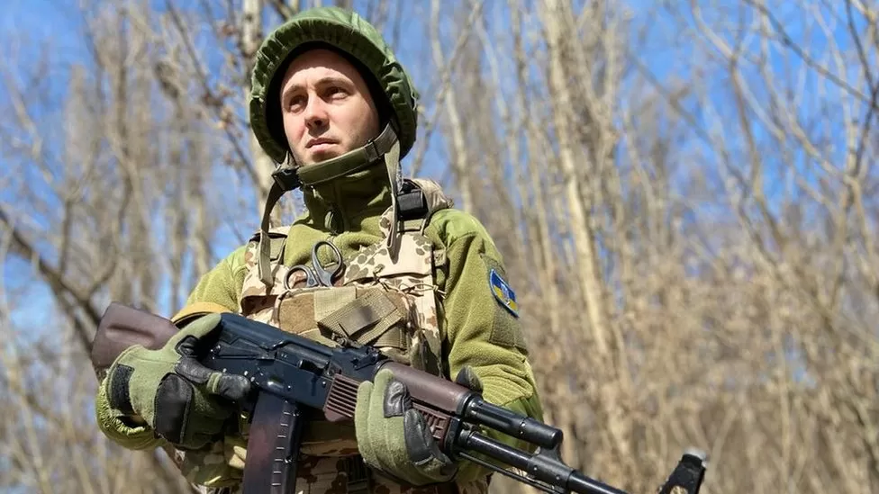

Members of Antytila, one of the biggest acts in Ukraine, have been fighting on the front line
Ukrainian group Antytila have teamed up with Ed Sheeran, releasing a new song partly filmed and recorded while serving in the war against Russia.
Ukrainian group Antytila have teamed up with Ed Sheeran, releasing a new song partly filmed and recorded while serving in the war against Russia.
Antytila are one of the biggest musical acts in Ukraine but stopped working to join the military. Proceeds from the song, released on Monday, will go to help the people of Ukraine. "Ed feels that pain, compassion and sympathy for Ukrainian people," lead singer Taras Topolya told the BBC. He said the lyrics were created while he was serving as a medic on the front line in Borodyanka. Borodyanka, just west of the capital, Kyiv, was occupied by the Russians, who left the town badly damaged. Ukrainian troops have since regained the area. After writing the lyrics, members of the group were also able to film while on the frontline in Kharkiv. "We just stopped in the middle of the road and were singing there in the middle of nowhere," he said.
Antytila went viral earlier this year after they posted a video offering to perform via live link at a concert for Ukraine in Birmingham. Organisers of the concert, which featured Ed Sheeran, turned down the offer because of the group's association with the military. Topolya said that because of this, Sheeran's team then proposed a collaboration with the band. The video has since had over one million views on Youtube
"It has already raised awareness about the situation in Ukraine and this process is continuing," Topolya said. "I am very glad a famous singer supports Ukrainians." He added: "Ed Sheeran, his team and others understand that we need help and support to survive and win. And I am very grateful for this."